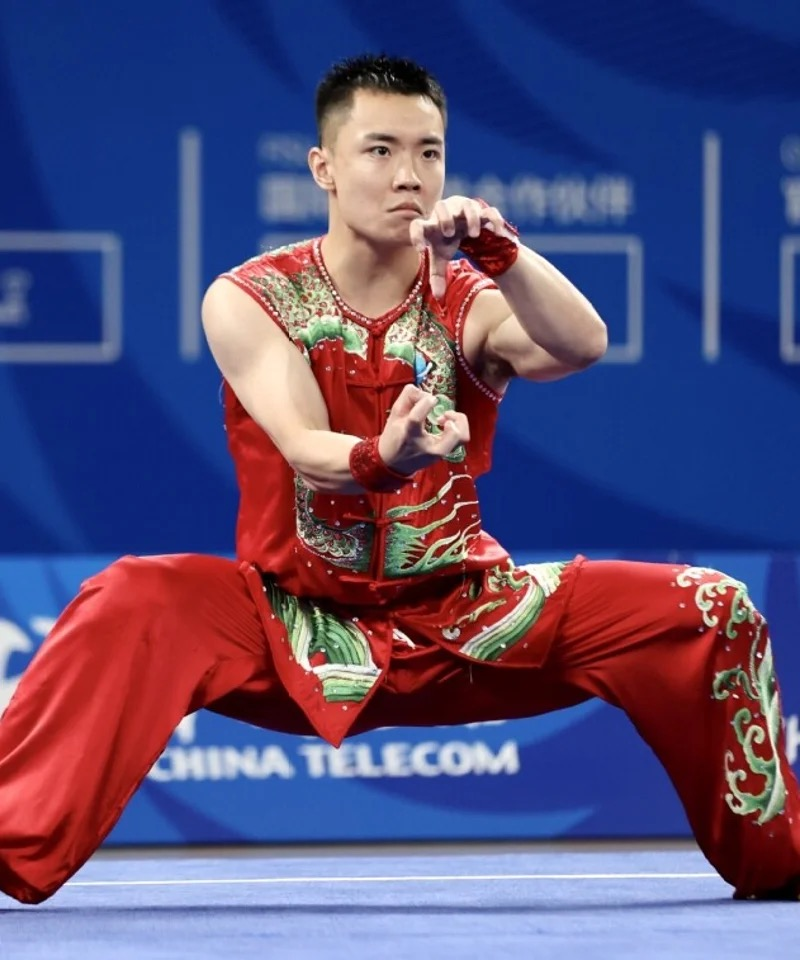
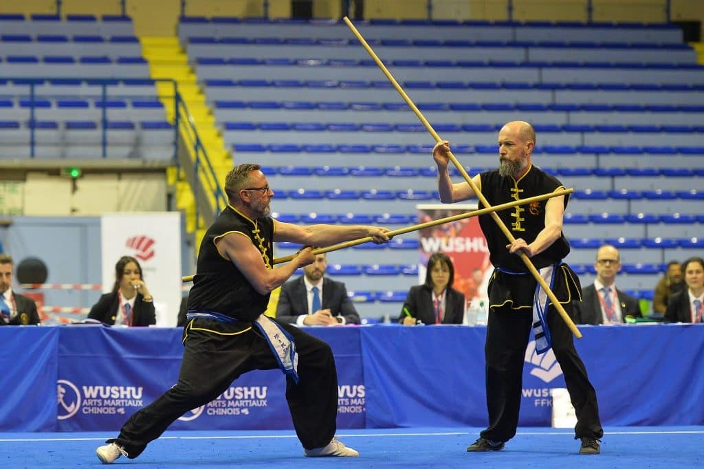
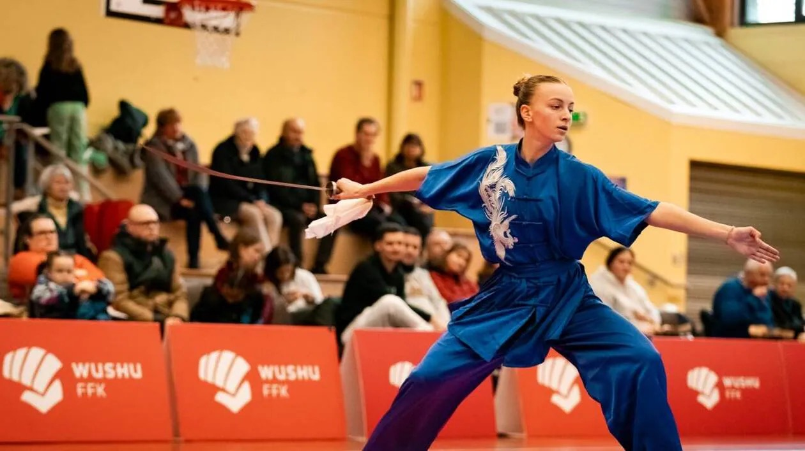
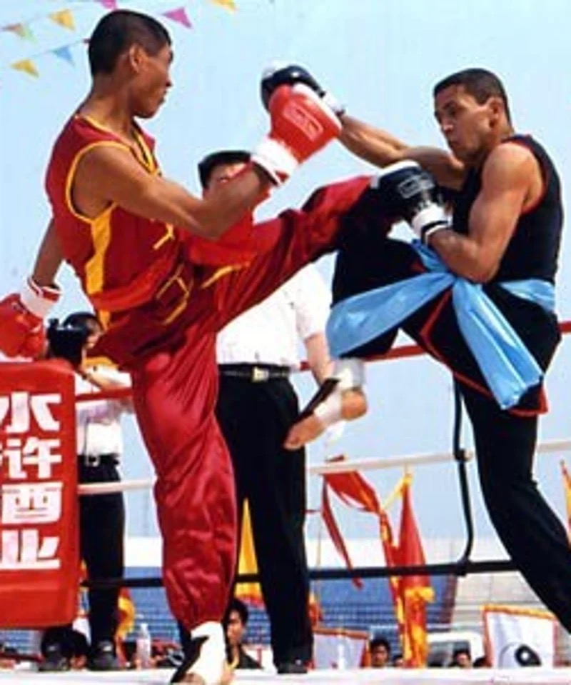
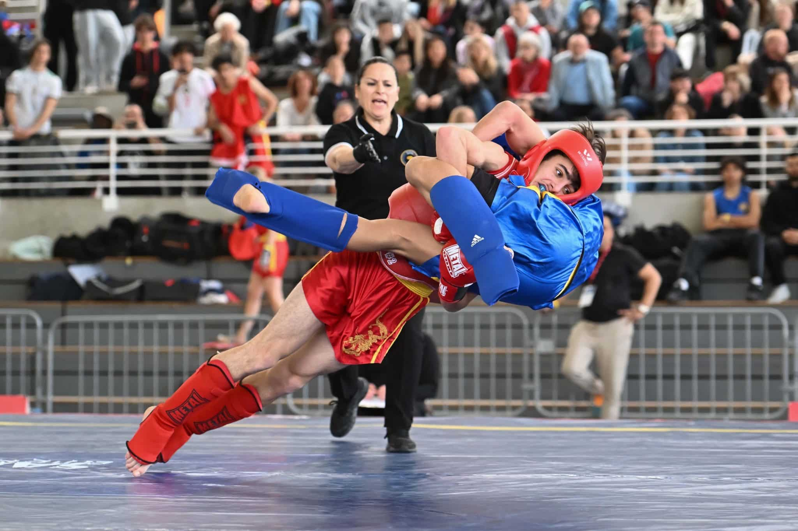
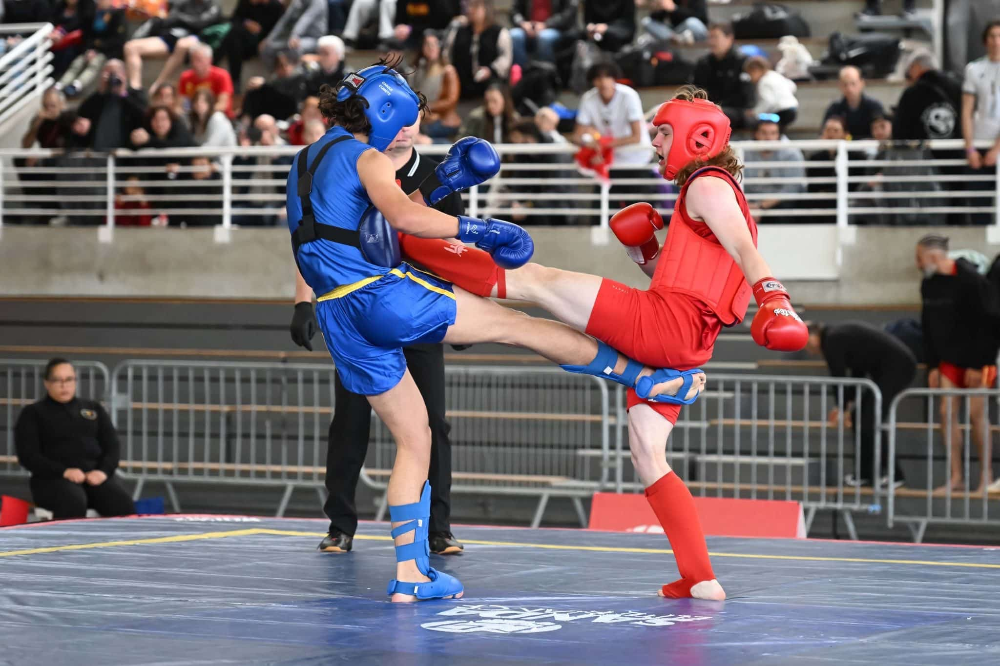

À mains nues
Les premières formes s'apprennent sans équipement. L'accent est mis sur la posture, l'enchaînement des appuis et la qualité d'exécution — des bases qui structurent toute la pratique ultérieure.
Trois expressions d'un même art martial : Kung-Fu traditionnel, Taolu et Sanda.
Derrière ces trois noms se cache un seul et même art — comprenons d'abord ce que les mots signifient vraiment.
Le Kung-Fu (en cantonais) ou Gong Fu (en mandarin) est le nom donné en Occident aux boxes chinoises, dont il existe d'innombrables variantes. Le terme signifie en lui-même : « savoir-faire », « objectif atteint », « maîtrise », « accomplissement ».
La maîtrise, le perfectionnement, la possession d'un métier — ou une action dans laquelle beaucoup de temps a été consacré. À rapprocher de la notion d'artisan telle qu'elle était usitée en Europe au XIXe siècle : l'homme de métier qui, par un apprentissage auprès d'un maître, acquérait culture, technique et savoir-faire.
Les techniques en tant que contenu — l'énergie investie dans l'action. Cette notion s'applique à tous les domaines d'excellence : le gong fu en gastronomie, en peinture, en musique, en informatique.
Dans la langue française ou anglaise, la transcription du mandarin Wushu désigne les arts martiaux chinois. C'est le terme officiel utilisé par les fédérations sportives internationales.
Le Taolu est l'art des enchaînements codifiés du Wushu. Le pratiquant — pieds nus ou armé — exécute une séquence de mouvements enchaînés qui reproduisent des situations de combat stylisées, alliant puissance explosive, précision du geste et fluidité de l'ensemble. C'est la discipline d'entrée au club pour les enfants : elle forge la coordination, la mémoire corporelle, l'équilibre et la maîtrise de soi bien avant que la question du combat ne se pose.




Tao Lu N°1 — Forme 1

2ème Tao

3ème Tao

4ème Tao

5ème Tao

6ème Tao — Le Tigre

Wu Bu Quan

1er Kuen

Interclub de Wushu le 27 avril 2025 à Vannes (56)

Tao de Bâton

Tao de Sabre
Le Sanda est la forme de combat libre du Wushu. Poings, pieds et projections — cette discipline de combat sportif s'inscrit dans la continuité du Kung-Fu de combat traditionnel, transposé dans un cadre réglementé, sécurisé et progressif. C'est la discipline phare du club, qui a formé plusieurs championnes et champions de France.




Stage de Sanda à Plérin — 2024

Stage de Sanda du 13 décembre 2025 — Complexe Sportif le Derf, Séné (56)

Championnat national de Sanda Light 2025 #1

Championnat national de Sanda Light 2025 #2